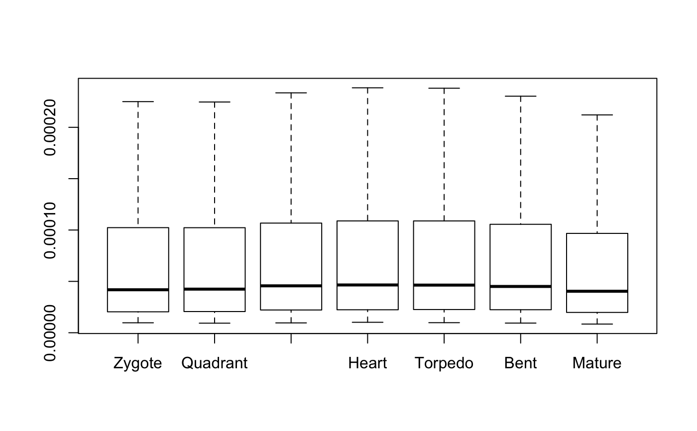
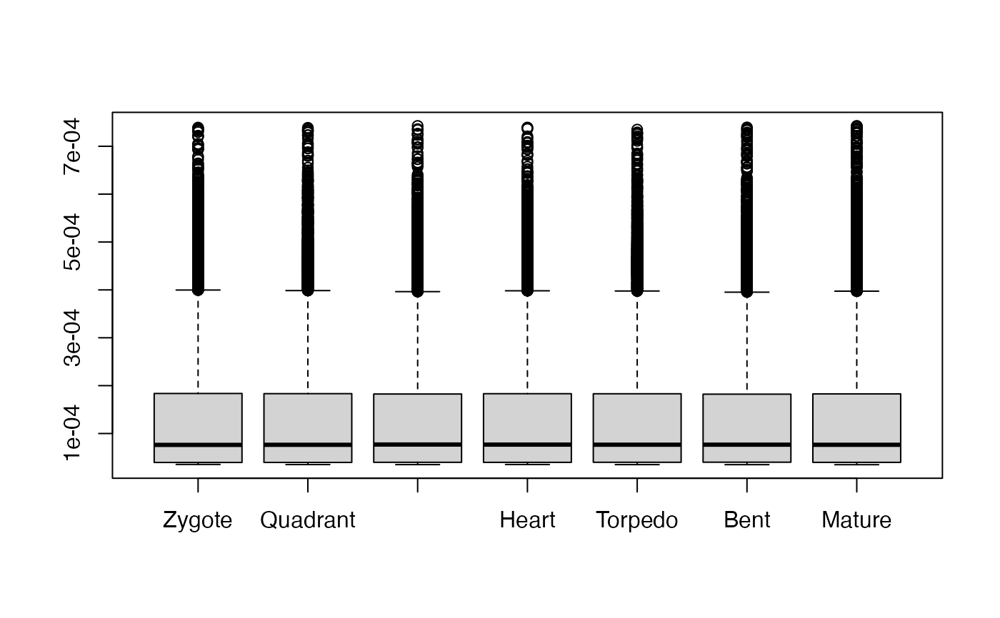

This function computes the partial TAI or TDI
values for each single gene in a PhyloExpressionSet or DivergenceExpressionSet object.
In detail, each gene gets a TAI contribution profile or TDI contribution profile.
$$TAI_{is} = f_{is} * ps_i$$
or
$$TDI_{is} = f_{is} * ps_i$$
where \(TAI_{is}\) or \(TDI_{is}\) is the partial TAI or TDI value of gene i, \(f_{is} = e_{is} / \sum e_{is}\) and \(ps_i\) is the phylostratum or divergence-stratum of gene i.
Value
a numeric matrix storing the partial TAI or TDI values for each gene in the corresponding PhyloExpressionSet or DivergenceExpressionSet.
Details
The partial TAI or TDI matrix can be used to perform different cluster analyses
and also gives an overall impression of the contribution of each gene to the global TAI or TDI pattern.
References
Domazet-Loso T and Tautz D. 2010. "A phylogenetically based transcriptome age index mirrors ontogenetic divergence patterns". Nature (468): 815-818.
Examples
# read standard phylotranscriptomics data
data(PhyloExpressionSetExample)
data(DivergenceExpressionSetExample)
# example PhyloExpressionSet
PTM_ps <- pMatrix(PhyloExpressionSetExample)
# example DivergenceExpressionSet
PTM_ds <- pMatrix(DivergenceExpressionSetExample)
# boxplot of the pMatrix
boxplot(pMatrix(PhyloExpressionSetExample),outline = FALSE)

# boxplot of the pMatrix using log2 transformed expression levels
boxplot(pMatrix(tf(PhyloExpressionSetExample,log2)))
